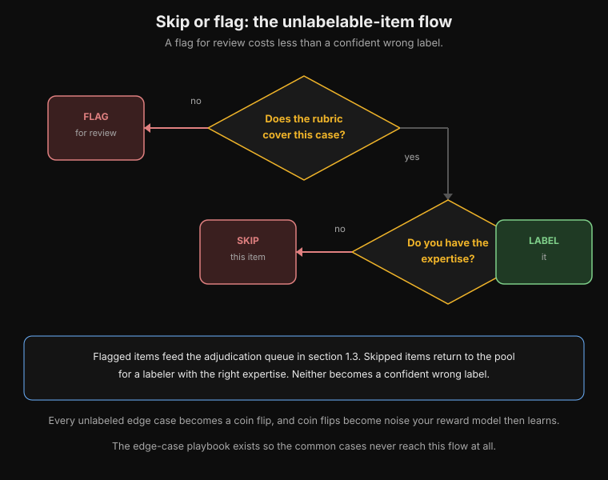
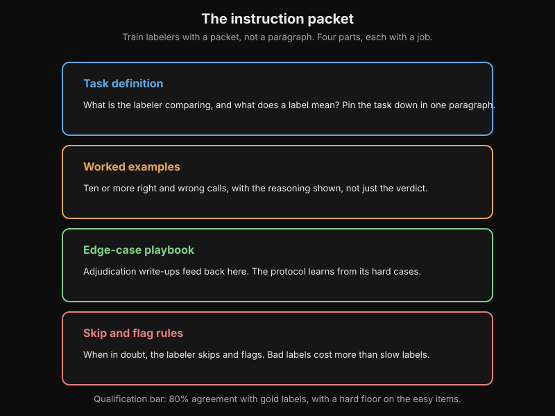
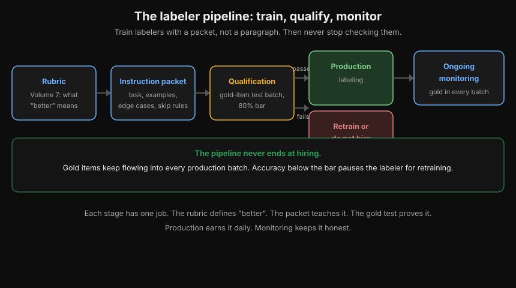
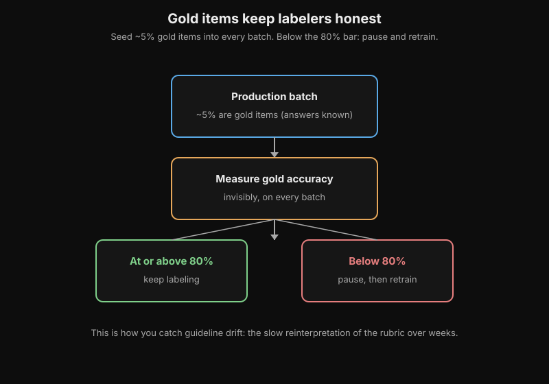
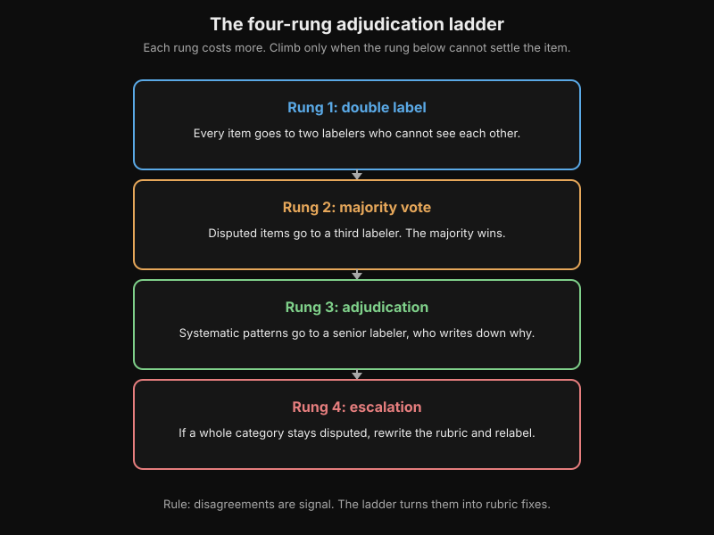
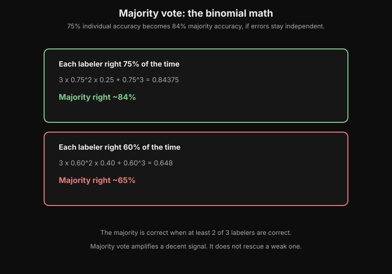
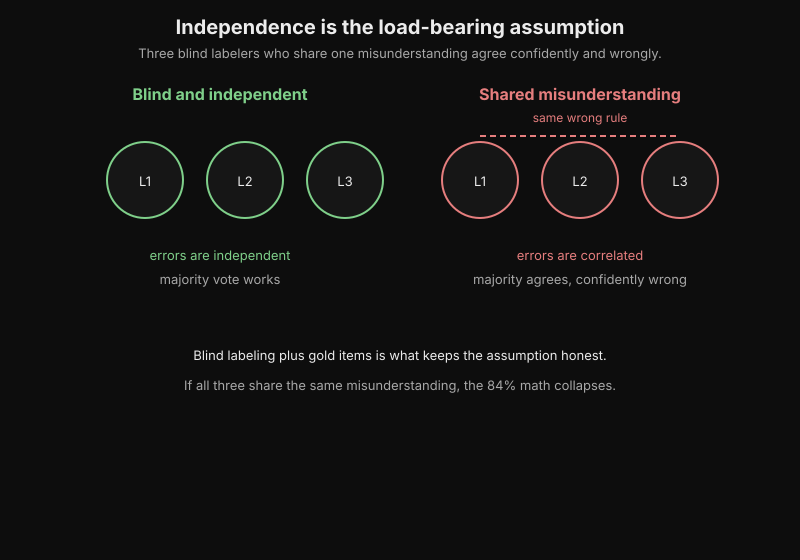
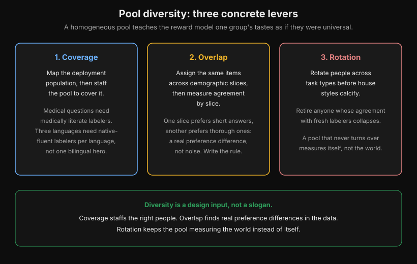
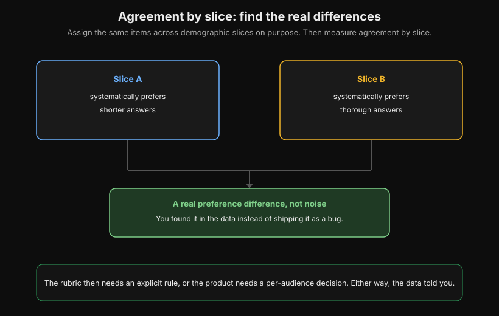

Preference-Labeler Protocols
Volume 7 covers the other half of preference data: how to write rubrics, why agreement sits around 70 percent, and the classic pitfalls (verbosity bias, sycophancy, guideline drift, demographic skew). This appendix covers the operational half. How do you train labelers? How do you handle their disagreements? How do you design the labeler pool so it does not silently bias your reward model?
A preference label is a measurement made by a human instrument. This appendix is the instrument's operating manual.
Chapter 1. From rubric to reliable labels
1.1 The instruction packet
Volume 7's rubric says what "better" means. The instruction packet teaches a new labeler to apply that rubric the same way a senior labeler would. The packet has four parts.
First, the task definition in one paragraph. What is the labeler comparing, and what does a label mean? "Pick the response you would rather receive" is one task. "Pick the more factually correct response" is a different task. Labelers will silently substitute one for the other. The packet must pin down which task the labelers do.
Second, worked examples of right and wrong calls. Not one example. Use ten or more, including the close calls where reasonable people disagree. Each example carries the reasoning, not just the verdict. Labelers copy the reasoning pattern, not the verdict.
Third, an edge-case playbook. What to do when both answers are wrong, when both are correct, when one is correct but rude, when the answer refuses. Every unlabeled edge case becomes a coin flip, and coin flips become noise your reward model then learns.
Fourth, when to skip or flag. Some items are unlabelable: the question needs expertise the labeler lacks, or the rubric does not cover the case. A "flag for review" button is cheaper than a confident wrong label. Flagged items feed the adjudication queue in section 1.3.

How to read this diagram
- The top diamond asks: does the rubric cover this case? No leads left to FLAG for review.
- Yes leads down to the second diamond: do you have the expertise? No leads left to SKIP the item.
- Yes leads right to LABEL it.
- The blue box explains the routing: flagged items feed the adjudication queue, skipped items return to the pool.
- The bottom lines state why: a confident wrong label becomes noise the reward model learns.

How to read this diagram
- Four boxes name the four parts of the packet.
- Task definition pins down the task in one paragraph.
- Worked examples show ten or more right and wrong calls, with the reasoning, not just the verdict.
- The edge-case playbook grows from adjudication write-ups.
- Skip and flag rules: a flag for review costs less than a confident wrong label.
Rubric (Volume 7: what "better" means)
|
v
Instruction packet: task definition, worked examples,
edge-case playbook, skip and flag rules
|
v
Qualification: gold-item test batch
|
+----+----+
| |
passes fails
| |
v v
Production Retrain or
labeling do not hire
|
v
Ongoing monitoring: gold items in every batch

How to read this diagram
- Read left to right. The rubric defines what "better" means. The packet teaches it.
- Qualification is the gold-item test batch with an 80% bar.
- Passing leads to production labeling. Failing leads to retraining or no hire.
- Production feeds ongoing monitoring: gold items in every batch catch drift.
- The green box states the point: the pipeline never ends at hiring.
1.2 Qualification: the gold-item test
Before a labeler touches production data, they label a test batch of 30 to 50 items where the correct answer is already known. These are gold items: written and adjudicated by senior labelers, covering the easy calls and the known-hard edge cases.
The bar is set in advance. A common bar is 80% agreement with the gold labels, with a hard floor on the easy items. Anyone who misses the obvious ones is not having a bad day. They misunderstand the task. Labelers who fail receive one retraining, then no more work. This sounds harsh until you price the alternative: a mislabeled preference pair poisons the reward model, and the policy then optimizes toward the poison.
Qualification is not a one-time event. Seed gold items into every production batch, invisibly, at around 5%. If a labeler's gold accuracy drifts below the bar, pause the labeler and retrain them. This is how you catch guideline drift, the slow reinterpretation of the rubric over weeks that Volume 7 names as a classic pitfall.

How to read this diagram
- The top box is the production batch. About 5 percent of its items are gold items with known answers.
- The middle box measures gold accuracy on every batch, invisibly.
- The green box: at or above 80 percent, the labeler keeps working.
- The red box: below 80 percent, pause the labeler and retrain them.
- This catches guideline drift: the slow reinterpretation of the rubric over weeks.
1.3 Disagreement handling: the adjudication ladder
Even good labelers disagree. Around 30% of preference pairs draw split verdicts in practice. The protocol decides what happens to those items, in four rungs.
Rung one is independent double labeling. Every production item goes to two labelers who cannot see each other. This is the cheapest way to find the items that matter. The agreements are your data. The disagreements signal where the rubric is weak.

How to read this diagram
- Four boxes run top to bottom: double label, majority vote, adjudication, escalation.
- Rung 1 sends every item to two labelers who cannot see each other.
- Rung 2 sends disputed items to a third labeler. The majority wins.
- Rung 3 sends systematic patterns to a senior labeler, who writes down why.
- Rung 4 pulls a disputed category from production and rewrites the rubric.
Rung two is majority vote. Disputed items go to a third independent labeler, and the majority wins. Majority vote is not magic. It is arithmetic.
If each labeler is right 75% of the time independently, the majority of three is right about 84% of the time. The math: the majority is correct when at least 2 of 3 are correct. That is 3 times 0.75 squared times 0.25, plus 0.75 cubed, or 0.84375.
The improvement only holds if the errors are independent, which is why the three labelers must work blind to each other.

How to read this diagram
- The top box starts at 75 percent individual accuracy. The binomial math gives 0.84375, about 84 percent.
- The bottom box starts at 60 percent individual accuracy. The same math gives 0.648, about 65 percent.
- The rule between them: the majority is correct when at least 2 of 3 labelers are correct.
- Lesson: 75 percent labelers become an 84 percent majority. 60 percent labelers stay weak.
Rung three is adjudication. Items that survive majority vote with systematic-looking patterns go to a senior labeler. This covers the borderline cases of one type that fail the same way.
The adjudicator does not just pick a winner. They write down why. That write-up goes back into the instruction packet's edge-case playbook. Adjudication is how the protocol learns.
Rung four is escalation. If disagreement on a whole category stays high after adjudication, the rubric itself is ambiguous and no amount of voting fixes it. Pull the item type from production, rewrite the rubric, and relabel previously labeled items of that type. This is expensive and it is the right call. A reward model trained on coin flips learns to flip coins.

How to read this diagram
- The left side shows three blind labelers, L1 to L3. Their errors are independent, so majority vote works.
- The right side shows three labelers joined by a dashed line: the same wrong rule.
- With a shared misunderstanding, the errors correlate. The majority agrees, confidently and wrongly.
- Blind labeling plus gold items is what keeps the assumption honest.
- If the assumption breaks, the 84 percent math collapses.
Two independent labels
|
+----+----+
| |
agree disagree
| |
v v
Label Third labeler:
accepted majority vote
|
+----+----+
| |
clear majority systematic
| pattern
v |
Label accepted v
Senior adjudicator:
decides + writes reasoning
|
+----+----+
| |
Reasoning feeds Whole category
back into the disputed
instruction |
packet v
Escalate: rewrite
the rubric, relabel
Here is the majority-vote arithmetic as code, so you can feel how the numbers move.
import math
def majority_vote_accuracy(p, n=3):
# p: probability one labeler is right on one item.
# n: odd number of independent labelers.
# Returns P(majority is right) = P(at least (n+1)/2 labelers are right).
# "Independent" is the load-bearing assumption: labelers must work blind
# to each other, or their errors correlate and this number lies.
if n % 2 == 0:
raise ValueError("majority vote needs an odd number of labelers")
needed = n // 2 + 1 # 2 of 3, 3 of 5, and so on.
total = 0.0
for k in range(needed, n + 1):
# Binomial term: choose(n,k) ways for exactly k to be right,
# times p^k * (1-p)^(n-k).
total += math.comb(n, k) * (p ** k) * ((1 - p) ** (n - k))
return total
# The worked example: 75% individual accuracy, 3 labelers.
print(f"3 labelers at 75%: majority = {majority_vote_accuracy(0.75, 3):.3f}")
# Diminishing returns: going from 3 to 5 labelers buys less than you hope.
print(f"5 labelers at 75%: majority = {majority_vote_accuracy(0.75, 5):.3f}")
# The floor matters most: weak labelers do not vote their way to quality.
print(f"3 labelers at 60%: majority = {majority_vote_accuracy(0.60, 3):.3f}")
How to read this diagram
- The function sums binomial terms: for each k from the majority threshold up to n, it adds the probability that exactly k labelers are right.
- With 75% individual accuracy, 3 labelers give 0.844. Five give 0.896. The jump from 1 to 3 is worth more than the jump from 3 to 5: diminishing returns.
- With 60% individual accuracy, the majority only reaches 0.648. Majority vote amplifies a decent signal. It does not rescue a weak one. This is why qualification (section 1.2) comes first.
- The independence assumption does the heavy lifting. If all three labelers share the same misunderstanding, they agree confidently and wrongly. Blind labeling plus gold items is what keeps the assumption honest.
1.4 Designing the pool: diversity as a protocol
Volume 7 names demographic skew as a classic pitfall. A small, homogeneous labeler pool teaches the reward model one group's tastes as if they were universal. Diversity of the labeler pool is not a slogan. It is a design input with three concrete levers.

How to read this diagram
- The blue box is coverage: map the deployment population, then staff the pool to cover it.
- The gold box is overlap: assign the same items across slices, then measure agreement by slice.
- The red box is rotation: rotate people across task types before house styles calcify.
- The green box states the principle: diversity is a design input, not a slogan.
The first lever is coverage. Map the deployment population (languages, regions, age bands, domains of expertise) and staff the pool to cover it. If the model will serve medical questions, some labelers need medical literacy. If it will serve three languages, each language needs native-fluent labelers, not one bilingual hero doing triple duty.
The second lever is overlap. Assign the same items across demographic slices on purpose, then measure agreement by slice. If one slice systematically prefers shorter answers and another prefers thorough ones, you have found a real preference difference, not noise. The rubric then needs an explicit rule, or the product needs a per-audience decision. Either way, you found it in the data instead of shipping it as a bug.

How to read this diagram
- The two boxes show two demographic slices labeling the same items.
- Slice A systematically prefers shorter answers. Slice B systematically prefers thorough answers.
- The green box names the finding: a real preference difference, not noise.
- The bottom line gives the two responses: write an explicit rubric rule, or make a per-audience product decision.
The third lever is rotation. Labelers who label the same task for months develop house styles and shared shortcuts. Rotate people across task types, and retire anyone whose agreement with fresh labelers collapses. A pool that never turns over is a pool that has stopped measuring the world and started measuring itself.
Key takeaways
- Train labelers with an instruction packet: task definition, worked examples, edge-case playbook, skip and flag rules.
- Qualify on gold items before production, and keep seeding golds into every batch to catch drift.
- Handle disagreement on a ladder: double label, majority vote, adjudication with written reasoning, escalation to rubric rewrite.
- Design the pool for coverage across your deployment population, measure agreement by slice, and rotate people before house styles calcify.
Last verified: September 2026. Majority-vote binomial arithmetic: standard probability. The four-rung adjudication ladder: double label, majority vote, senior adjudication with written reasoning, rubric escalation. Gold-item seeding at ~5% with an 80% bar.
RLHF practitioner writeups document both as preference-data operations practice.
InstructGPT's reported ~70% labeler agreement and the named pitfalls (verbosity bias, guideline drift, demographic skew): Volume 7's coverage, consistent with the InstructGPT paper's reported methodology. UNVERIFIED: the specific constants (30 to 50 gold items, 5% seeding, 80% bar) are practitioner rules of thumb from operations writeups, not from one citable paper.